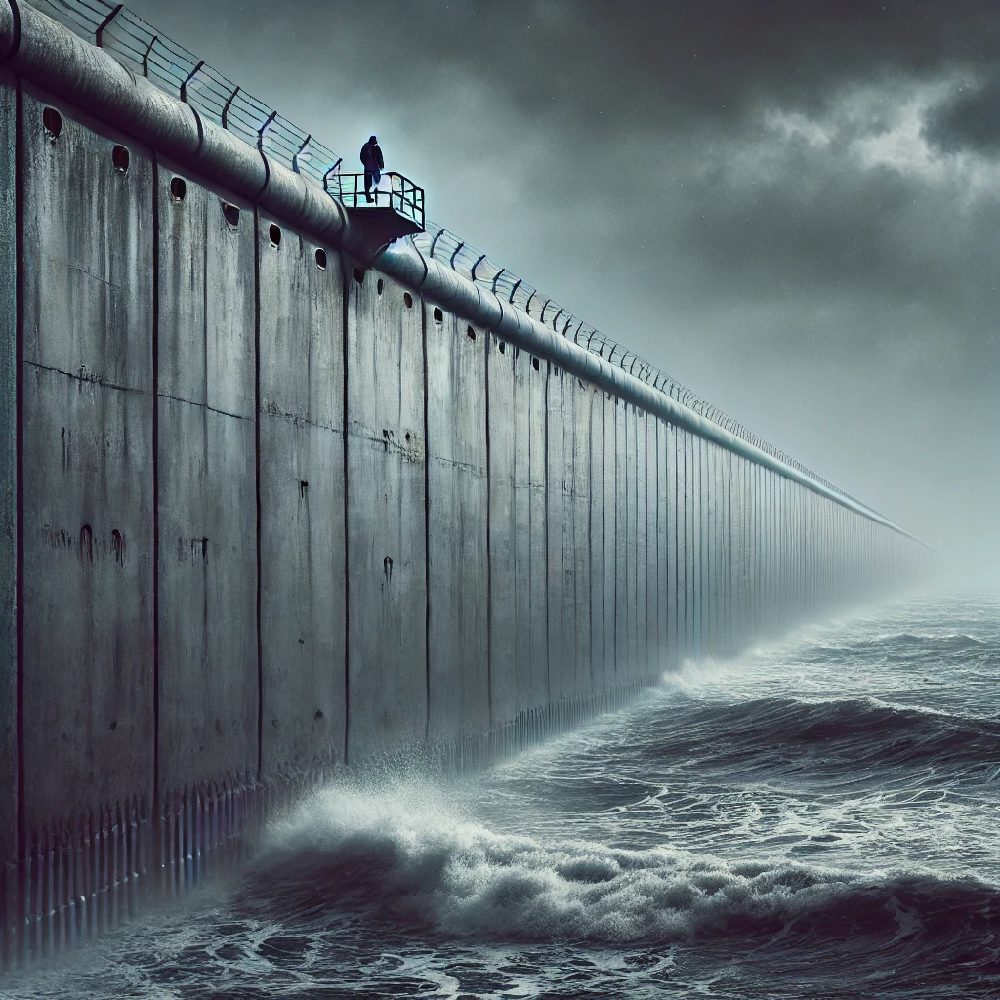

작가
존 란체스터
출판일
2010년
감상평에 대한 AI그림
읽는 내내 머릿속에 차가운 벽이 선명하게 그려지는 책입니다.
끝없이 이어진 장벽과 그 위에서 느껴지는 긴장감이 너무 현실적이라 섬뜩했습니다.
미래에 대한 불안과 생존의 두려움이 묵직하게 다가와 마음을 조이게 했습니다.
다 읽고 나니 ‘내가 저 벽 위에 있었다면 어땠을까?’ 스스로 계속 질문하게 되는 작품입니다.

감상평에 대한 AI평가
~~~~AI평가~~~~~
✨ 긴장감과 불안감이 생생하게 전달되어 작품의 분위기를 잘 살렸다.
✨ 자신을 벽 위에 세워보는 상상으로 독창적인 시선이 담겼다.
✨ 현실과 소설을 연결해 독자의 공감을 이끌어내는 표현이 돋보인다.